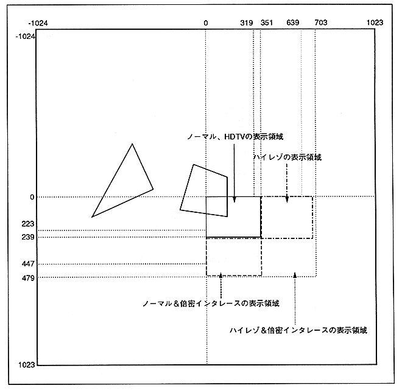

The frame buffer plane coordinates are as follows. The coordinate value in the lower right will increase.
- X: -1024 ≦ X ≦ 1023
Y: -1024 ≦ Y ≦ 1023
Operation beyond these values is not guaranteed.
Figure 2.2 Frame buffer plane

パ ー ツ Parts can be placed outside the display screen as shown above. However, anything beyond the frame buffer plane is not written.